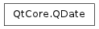

QDate ¶

Synopsis ¶
Functions ¶
- def __eq__ (other)
- def __ge__ (other)
- def __gt__ (other)
- def __le__ (other)
- def __lt__ (other)
- def __ne__ (other)
- def __reduce__ ()
- def __repr__ ()
- def addDays (days)
- def addMonths (months)
- def addYears (years)
- def day ()
- def dayOfWeek ()
- def dayOfYear ()
- def daysInMonth ()
- def daysInYear ()
- def daysTo (arg__1)
- def getDate ()
- def isNull ()
- def isValid ()
- def month ()
- def setDate (year, month, day)
- def setYMD (y, m, d)
- def toJulianDay ()
- def toPython ()
- def toString ([f=Qt.TextDate])
- def toString (format)
- def weekNumber ()
- def year ()
Static functions ¶
- def currentDate ()
- def fromJulianDay (jd)
- def fromString (s, format)
- def fromString (s[, f=Qt.TextDate])
- def gregorianToJulian (y, m, d)
- def isLeapYear (year)
- def isValid (y, m, d)
- def longDayName (weekday)
- def longDayName (weekday, type)
- def longMonthName (month)
- def longMonthName (month, type)
- def shortDayName (weekday)
- def shortDayName (weekday, type)
- def shortMonthName (month)
- def shortMonthName (month, type)
Detailed Description ¶
The PySide.QtCore.QDate class provides date functions.
A PySide.QtCore.QDate object contains a calendar date, i.e. year, month, and day numbers, in the Gregorian calendar. (see Use of Gregorian and Julian Calendars for dates prior to 15 October 1582). It can read the current date from the system clock. It provides functions for comparing dates, and for manipulating dates. For example, it is possible to add and subtract days, months, and years to dates.
A PySide.QtCore.QDate object is typically created either by giving the year, month, and day numbers explicitly. Note that PySide.QtCore.QDate interprets two digit years as is, i.e., years 0 - 99. A PySide.QtCore.QDate can also be constructed with the static function PySide.QtCore.QDate.currentDate() , which creates a PySide.QtCore.QDate object containing the system clock’s date. An explicit date can also be set using PySide.QtCore.QDate.setDate() . The PySide.QtCore.QDate.fromString() function returns a PySide.QtCore.QDate given a string and a date format which is used to interpret the date within the string.
The PySide.QtCore.QDate.year() , PySide.QtCore.QDate.month() , and PySide.QtCore.QDate.day() functions provide access to the year, month, and day numbers. Also, PySide.QtCore.QDate.dayOfWeek() and PySide.QtCore.QDate.dayOfYear() functions are provided. The same information is provided in textual format by the PySide.QtCore.QDate.toString() , PySide.QtCore.QDate.shortDayName() , PySide.QtCore.QDate.longDayName() , PySide.QtCore.QDate.shortMonthName() , and PySide.QtCore.QDate.longMonthName() functions.
PySide.QtCore.QDate provides a full set of operators to compare two PySide.QtCore.QDate objects where smaller means earlier, and larger means later.
You can increment (or decrement) a date by a given number of days using PySide.QtCore.QDate.addDays() . Similarly you can use PySide.QtCore.QDate.addMonths() and PySide.QtCore.QDate.addYears() . The PySide.QtCore.QDate.daysTo() function returns the number of days between two dates.
The PySide.QtCore.QDate.daysInMonth() and PySide.QtCore.QDate.daysInYear() functions return how many days there are in this date’s month and year, respectively. The PySide.QtCore.QDate.isLeapYear() function indicates whether a date is in a leap year.
Use of Gregorian and Julian Calendars ¶
PySide.QtCore.QDate uses the Gregorian calendar in all locales, beginning on the date 15 October 1582. For dates up to and including 4 October 1582, the Julian calendar is used. This means there is a 10-day gap in the internal calendar between the 4th and the 15th of October 1582. When you use PySide.QtCore.QDateTime for dates in that epoch, the day after 4 October 1582 is 15 October 1582, and the dates in the gap are invalid.
The Julian to Gregorian changeover date used here is the date when the Gregorian calendar was first introduced, by Pope Gregory XIII. That change was not universally accepted and some localities only executed it at a later date (if at all). PySide.QtCore.QDateTime doesn’t take any of these historical facts into account. If an application must support a locale-specific dating system, it must do so on its own, remembering to convert the dates using the Julian day.
No Year 0 ¶
There is no year 0. Dates in that year are considered invalid. The year -1 is the year “1 before Christ” or “1 before current era.” The day before 0001-01-01 is December 31st, 1 BCE.
Range of Valid Dates ¶
The range of valid dates is from January 2nd, 4713 BCE, to sometime in the year 11 million CE. The Julian Day returned by QDate.toJulianDay() is a number in the contiguous range from 1 to overflow , even across PySide.QtCore.QDateTime ‘s “date holes”. It is suitable for use in applications that must convert a PySide.QtCore.QDateTime to a date in another calendar system, e.g., Hebrew, Islamic or Chinese.
- class PySide.QtCore. QDate ¶
- class PySide.QtCore. QDate ( QDate )
- class PySide.QtCore. QDate ( y , m , d )
-
Parameters: - y – PySide.QtCore.int
- m – PySide.QtCore.int
- QDate – PySide.QtCore.QDate
- d – PySide.QtCore.int
Constructs a null date. Null dates are invalid.
Constructs a date with year y , month m and day d .
If the specified date is invalid, the date is not set and PySide.QtCore.QDate.isValid() returns false. A date before 2 January 4713 B.C. is considered invalid.
Warning
Years 0 to 99 are interpreted as is, i.e., years 0-99.
See also
- PySide.QtCore.QDate. MonthNameType ¶
-
This enum describes the types of the string representation used for the month name.
Constant Description QDate.DateFormat This type of name can be used for date-to-string formatting. QDate.StandaloneFormat This type is used when you need to enumerate months or weekdays. Usually standalone names are represented in singular forms with capitalized first letter.
- PySide.QtCore.QDate. __reduce__ ( ) ¶
-
Return type: PyObject
- PySide.QtCore.QDate. __repr__ ( ) ¶
-
Return type: PyObject
- PySide.QtCore.QDate. addDays ( days ) ¶
-
Parameters: days – PySide.QtCore.int Return type: PySide.QtCore.QDate Returns a PySide.QtCore.QDate object containing a date ndays later than the date of this object (or earlier if ndays is negative).
- PySide.QtCore.QDate. addMonths ( months ) ¶
-
Parameters: months – PySide.QtCore.int Return type: PySide.QtCore.QDate Returns a PySide.QtCore.QDate object containing a date nmonths later than the date of this object (or earlier if nmonths is negative).
Note
If the ending day/month combination does not exist in the resulting month/year, this function will return a date that is the latest valid date.
Warning
PySide.QtCore.QDate has a date hole around the days introducing the Gregorian calendar (the days 5 to 14 October 1582, inclusive, do not exist). If the calculation ends in one of those days, PySide.QtCore.QDate will return either October 4 or October 15.
- PySide.QtCore.QDate. addYears ( years ) ¶
-
Parameters: years – PySide.QtCore.int Return type: PySide.QtCore.QDate Returns a PySide.QtCore.QDate object containing a date nyears later than the date of this object (or earlier if nyears is negative).
Note
If the ending day/month combination does not exist in the resulting year (i.e., if the date was Feb 29 and the final year is not a leap year), this function will return a date that is the latest valid date (that is, Feb 28).
- static PySide.QtCore.QDate. currentDate ( ) ¶
-
Return type: PySide.QtCore.QDate Returns the current date, as reported by the system clock.
- PySide.QtCore.QDate. day ( ) ¶
-
Return type: PySide.QtCore.int Returns the day of the month (1 to 31) of this date.
- PySide.QtCore.QDate. dayOfWeek ( ) ¶
-
Return type: PySide.QtCore.int Returns the weekday (1 to 7) for this date.
See also
PySide.QtCore.QDate.day() PySide.QtCore.QDate.dayOfYear() Qt.DayOfWeek
- PySide.QtCore.QDate. dayOfYear ( ) ¶
-
Return type: PySide.QtCore.int Returns the day of the year (1 to 365 or 366 on leap years) for this date.
- PySide.QtCore.QDate. daysInMonth ( ) ¶
-
Return type: PySide.QtCore.int Returns the number of days in the month (28 to 31) for this date.
- PySide.QtCore.QDate. daysInYear ( ) ¶
-
Return type: PySide.QtCore.int Returns the number of days in the year (365 or 366) for this date.
- PySide.QtCore.QDate. daysTo ( arg__1 ) ¶
-
Parameters: arg__1 – PySide.QtCore.QDate Return type: PySide.QtCore.int Returns the number of days from this date to d (which is negative if d is earlier than this date).
Example:
d1 = QDate ( 1995 , 5 , 17 ) # May 17, 1995 d2 = QDate ( 1995 , 5 , 20 ) # May 20, 1995 d1 . daysTo ( d2 ) # returns 3 d2 . daysTo ( d1 ) # returns -3See also
- static PySide.QtCore.QDate. fromJulianDay ( jd ) ¶
-
Parameters: jd – PySide.QtCore.int Return type: PySide.QtCore.QDate Converts the Julian day jd to a PySide.QtCore.QDate .
See also
- static PySide.QtCore.QDate. fromString ( s [ , f=Qt.TextDate ] ) ¶
-
Parameters: - s – unicode
- f – PySide.QtCore.Qt.DateFormat
Return type:
- static PySide.QtCore.QDate. fromString ( s , format )
-
Parameters: - s – unicode
- format – unicode
Return type: Returns the PySide.QtCore.QDate represented by the string , using the format given, or an invalid date if the string cannot be parsed.
These expressions may be used for the format:
Expression Output d The day as a number without a leading zero (1 to 31) dd The day as a number with a leading zero (01 to 31) ddd The abbreviated localized day name (e.g. ‘Mon’ to ‘Sun’). Uses QDate.shortDayName() . dddd The long localized day name (e.g. ‘Monday’ to ‘Sunday’). Uses QDate.longDayName() . M The month as a number without a leading zero (1 to 12) MM The month as a number with a leading zero (01 to 12) MMM The abbreviated localized month name (e.g. ‘Jan’ to ‘Dec’). Uses QDate.shortMonthName() . MMMM The long localized month name (e.g. ‘January’ to ‘December’). Uses QDate.longMonthName() . yy The year as two digit number (00 to 99) yyyy The year as four digit number. If the year is negative, a minus sign is prepended in addition. All other input characters will be treated as text. Any sequence of characters that are enclosed in single quotes will also be treated as text and will not be used as an expression. For example:
date = QDate . fromString ( "1MM12car2003" , "d'MM'MMcaryyyy" ) # date is 1 December 2003If the format is not satisfied, an invalid PySide.QtCore.QDate is returned. The expressions that don’t expect leading zeroes (d, M) will be greedy. This means that they will use two digits even if this will put them outside the accepted range of values and leaves too few digits for other sections. For example, the following format string could have meant January 30 but the M will grab two digits, resulting in an invalid date:
date = QDate . fromString ( "130" , "Md" ) # invalidFor any field that is not represented in the format the following defaults are used:
Field Default value Year 1900 Month 1 Day 1 The following examples demonstrate the default values:
QDate . fromString ( "1.30" , "M.d" ) # January 30 1900 QDate . fromString ( "20000110" , "yyyyMMdd" ) # January 10, 2000 QDate . fromString ( "20000110" , "yyyyMd" ) # January 10, 2000
- PySide.QtCore.QDate. getDate ( ) ¶
-
Extracts the date’s year, month, and day, and assigns them to *``year`` , *``month`` , and *``day`` . The pointers may be null.
- static PySide.QtCore.QDate. gregorianToJulian ( y , m , d ) ¶
-
Parameters: - y – PySide.QtCore.int
- m – PySide.QtCore.int
- d – PySide.QtCore.int
Return type: PySide.QtCore.uint
This function has a confusing name and shouldn’t be part of the API anyway, since we have toJulian() and fromJulian(). ### Qt 5: remove it
- static PySide.QtCore.QDate. isLeapYear ( year ) ¶
-
Parameters: year – PySide.QtCore.int Return type: PySide.QtCore.bool Returns true if the specified year is a leap year; otherwise returns false.
- PySide.QtCore.QDate. isNull ( ) ¶
-
Return type: PySide.QtCore.bool Returns true if the date is null; otherwise returns false. A null date is invalid.
Note
The behavior of this function is equivalent to PySide.QtCore.QDate.isValid() .
See also
- PySide.QtCore.QDate. isValid ( ) ¶
-
Return type: PySide.QtCore.bool Returns true if this date is valid; otherwise returns false.
See also
- static PySide.QtCore.QDate. isValid ( y , m , d )
-
Parameters: - y – PySide.QtCore.int
- m – PySide.QtCore.int
- d – PySide.QtCore.int
Return type: PySide.QtCore.bool
This is an overloaded function.
Returns true if the specified date ( year , month , and day ) is valid; otherwise returns false.
Example:
QDate . isValid ( 2002 , 5 , 17 ) # True QDate . isValid ( 2002 , 2 , 30 ) # False (Feb 30 does not exist) QDate . isValid ( 2004 , 2 , 29 ) # True (2004 is a leap year) QDate . isValid ( 2000 , 2 , 29 ) # True (2000 is a leap year) QDate . isValid ( 2006 , 2 , 29 ) # False (2006 is not a leap year) QDate . isValid ( 2100 , 2 , 29 ) # False (2100 is not a leap year) QDate . isValid ( 1202 , 6 , 6 ) # True (even though 1202 is pre-Gregorian)
- static PySide.QtCore.QDate. longDayName ( weekday ) ¶
-
Parameters: weekday – PySide.QtCore.int Return type: unicode Returns the long version of the name of the weekday . The returned name is in normal type which can be used for date formatting.
- static PySide.QtCore.QDate. longDayName ( weekday , type )
-
Parameters: - weekday – PySide.QtCore.int
- type – PySide.QtCore.QDate.MonthNameType
Return type: unicode
Returns the long name of the weekday for the representation specified by type .
The days are enumerated using the following convention:
- 1 = “Monday”
- 2 = “Tuesday”
- 3 = “Wednesday”
- 4 = “Thursday”
- 5 = “Friday”
- 6 = “Saturday”
- 7 = “Sunday”
The day names will be localized according to the system’s locale settings.
- static PySide.QtCore.QDate. longMonthName ( month , type ) ¶
-
Parameters: - month – PySide.QtCore.int
- type – PySide.QtCore.QDate.MonthNameType
Return type: unicode
Returns the long name of the month for the representation specified by type .
The months are enumerated using the following convention:
- 1 = “January”
- 2 = “February”
- 3 = “March”
- 4 = “April”
- 5 = “May”
- 6 = “June”
- 7 = “July”
- 8 = “August”
- 9 = “September”
- 10 = “October”
- 11 = “November”
- 12 = “December”
The month names will be localized according to the system’s locale settings.
- static PySide.QtCore.QDate. longMonthName ( month )
-
Parameters: month – PySide.QtCore.int Return type: unicode Returns the long version of the name of the month . The returned name is in normal type which can be used for date formatting.
- PySide.QtCore.QDate. month ( ) ¶
-
Return type: PySide.QtCore.int Returns the number corresponding to the month of this date, using the following convention:
- 1 = “January”
- 2 = “February”
- 3 = “March”
- 4 = “April”
- 5 = “May”
- 6 = “June”
- 7 = “July”
- 8 = “August”
- 9 = “September”
- 10 = “October”
- 11 = “November”
- 12 = “December”
- PySide.QtCore.QDate. __ne__ ( other ) ¶
-
Parameters: other – PySide.QtCore.QDate Return type: PySide.QtCore.bool Returns true if this date is different from d ; otherwise returns false.
- PySide.QtCore.QDate. __lt__ ( other ) ¶
-
Parameters: other – PySide.QtCore.QDate Return type: PySide.QtCore.bool Returns true if this date is earlier than d ; otherwise returns false.
- PySide.QtCore.QDate. __le__ ( other ) ¶
-
Parameters: other – PySide.QtCore.QDate Return type: PySide.QtCore.bool Returns true if this date is earlier than or equal to d ; otherwise returns false.
- PySide.QtCore.QDate. __eq__ ( other ) ¶
-
Parameters: other – PySide.QtCore.QDate Return type: PySide.QtCore.bool Returns true if this date is equal to d ; otherwise returns false.
- PySide.QtCore.QDate. __gt__ ( other ) ¶
-
Parameters: other – PySide.QtCore.QDate Return type: PySide.QtCore.bool Returns true if this date is later than d ; otherwise returns false.
- PySide.QtCore.QDate. __ge__ ( other ) ¶
-
Parameters: other – PySide.QtCore.QDate Return type: PySide.QtCore.bool Returns true if this date is later than or equal to d ; otherwise returns false.
- PySide.QtCore.QDate. setDate ( year , month , day ) ¶
-
Parameters: - year – PySide.QtCore.int
- month – PySide.QtCore.int
- day – PySide.QtCore.int
Return type: PySide.QtCore.bool
Sets the date’s year , month , and day . Returns true if the date is valid; otherwise returns false.
If the specified date is invalid, the PySide.QtCore.QDate object is set to be invalid. Any date before 2 January 4713 B.C. is considered invalid.
See also
- PySide.QtCore.QDate. setYMD ( y , m , d ) ¶
-
Parameters: - y – PySide.QtCore.int
- m – PySide.QtCore.int
- d – PySide.QtCore.int
Return type: PySide.QtCore.bool
Sets the date’s year y , month m , and day d .
If y is in the range 0 to 99, it is interpreted as 1900 to 1999.
Use PySide.QtCore.QDate.setDate() instead.
- static PySide.QtCore.QDate. shortDayName ( weekday , type ) ¶
-
Parameters: - weekday – PySide.QtCore.int
- type – PySide.QtCore.QDate.MonthNameType
Return type: unicode
Returns the short name of the weekday for the representation specified by type .
The days are enumerated using the following convention:
- 1 = “Mon”
- 2 = “Tue”
- 3 = “Wed”
- 4 = “Thu”
- 5 = “Fri”
- 6 = “Sat”
- 7 = “Sun”
The day names will be localized according to the system’s locale settings.
- static PySide.QtCore.QDate. shortDayName ( weekday )
-
Parameters: weekday – PySide.QtCore.int Return type: unicode Returns the short version of the name of the weekday . The returned name is in normal type which can be used for date formatting.
- static PySide.QtCore.QDate. shortMonthName ( month ) ¶
-
Parameters: month – PySide.QtCore.int Return type: unicode Returns the short version of the name of the month . The returned name is in normal type which can be used for date formatting.
- static PySide.QtCore.QDate. shortMonthName ( month , type )
-
Parameters: - month – PySide.QtCore.int
- type – PySide.QtCore.QDate.MonthNameType
Return type: unicode
Returns the short name of the month for the representation specified by type .
The months are enumerated using the following convention:
- 1 = “Jan”
- 2 = “Feb”
- 3 = “Mar”
- 4 = “Apr”
- 5 = “May”
- 6 = “Jun”
- 7 = “Jul”
- 8 = “Aug”
- 9 = “Sep”
- 10 = “Oct”
- 11 = “Nov”
- 12 = “Dec”
The month names will be localized according to the system’s locale settings.
- PySide.QtCore.QDate. toJulianDay ( ) ¶
-
Return type: PySide.QtCore.int Converts the date to a Julian day.
See also
- PySide.QtCore.QDate. toPython ( ) ¶
-
Return type: PyObject
- PySide.QtCore.QDate. toString ( format ) ¶
-
Parameters: format – unicode Return type: unicode Returns the date as a string. The format parameter determines the format of the result string.
These expressions may be used:
Expression Output d the day as number without a leading zero (1 to 31) dd the day as number with a leading zero (01 to 31) ddd the abbreviated localized day name (e.g. ‘Mon’ to ‘Sun’). Uses QDate.shortDayName() . dddd the long localized day name (e.g. ‘Monday’ to ‘Sunday’). Uses QDate.longDayName() . M the month as number without a leading zero (1 to 12) MM the month as number with a leading zero (01 to 12) MMM the abbreviated localized month name (e.g. ‘Jan’ to ‘Dec’). Uses QDate.shortMonthName() . MMMM the long localized month name (e.g. ‘January’ to ‘December’). Uses QDate.longMonthName() . yy the year as two digit number (00 to 99) yyyy the year as four digit number. If the year is negative, a minus sign is prepended in addition. All other input characters will be ignored. Any sequence of characters that are enclosed in singlequotes will be treated as text and not be used as an expression. Two consecutive singlequotes (“’‘”) are replaced by a singlequote in the output.
Example format strings (assuming that the PySide.QtCore.QDate is the 20 July 1969):
Format Result dd.MM.yyyy 20.07.1969 ddd MMMM d yy Sun July 20 69 ‘The day is’ dddd The day is Sunday If the datetime is invalid, an empty string will be returned.
Warning
The Qt.ISODate format is only valid for years in the range 0 to 9999. This restriction may apply to locale-aware formats as well, depending on the locale settings.
See also
- PySide.QtCore.QDate. toString ( [ f=Qt.TextDate ] )
-
Parameters: f – PySide.QtCore.Qt.DateFormat Return type: unicode
- PySide.QtCore.QDate. weekNumber ( ) ¶
-
Return type: (week, yearNumber) Returns the week number (1 to 53), and stores the year in *``yearNumber`` unless yearNumber is null (the default).
Returns 0 if the date is invalid.
In accordance with ISO 8601, weeks start on Monday and the first Thursday of a year is always in week 1 of that year. Most years have 52 weeks, but some have 53.
*``yearNumber`` is not always the same as PySide.QtCore.QDate.year() . For example, 1 January 2000 has week number 52 in the year 1999, and 31 December 2002 has week number 1 in the year 2003.
Copyright (c) 1989 The Regents of the University of California. All rights reserved. Redistribution and use in source and binary forms are permitted provided that the above copyright notice and this paragraph are duplicated in all such forms and that any documentation, advertising materials, and other materials related to such distribution and use acknowledge that the software was developed by the University of California, Berkeley. The name of the University may not be used to endorse or promote products derived from this software without specific prior written permission. THIS SOFTWARE IS PROVIDED "AS IS" AND WITHOUT ANY EXPRESS OR IMPLIED WARRANTIES, INCLUDING, WITHOUT LIMITATION, THE IMPLIED WARRANTIES OF MERCHANTABILITY AND FITNESS FOR A PARTICULAR PURPOSE.See also
- PySide.QtCore.QDate. year ( ) ¶
-
Return type: PySide.QtCore.int Returns the year of this date. Negative numbers indicate years before 1 A.D. = 1 C.E., such that year -44 is 44 B.C.